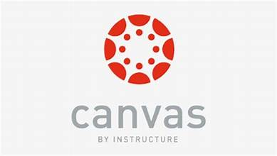
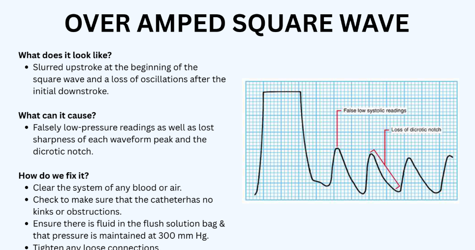
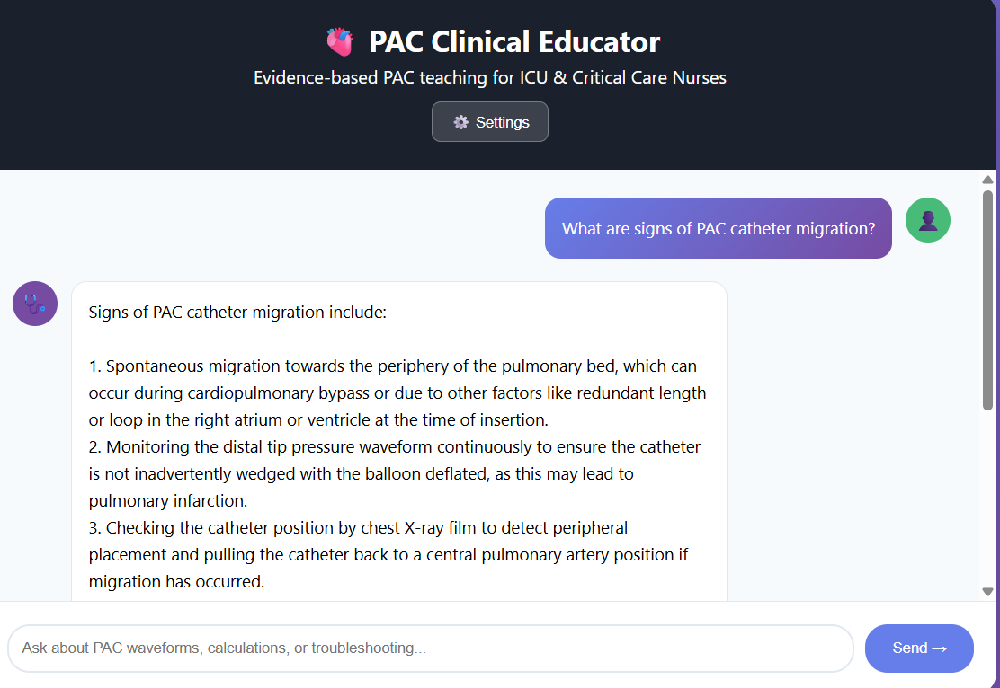
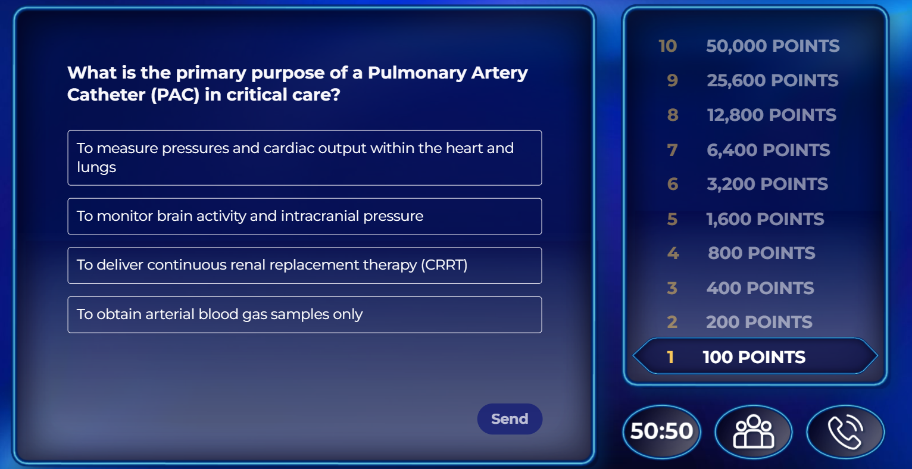

This instructional design project was developed to support foundational learning related to Pulmonary Artery Catheter (PAC) monitoring in critical care environments. The module introduces learners to pulmonary artery catheter purpose, waveform interpretation, hemodynamic measurements, troubleshooting, and patient safety considerations.
Designed in collaboration with a clinical subject matter expert, the learning experience translates complex cardiovascular monitoring concepts into approachable and clinically relevant instruction. Materials were organized within Canvas LMS using scaffolded learning progression, visual examples, interactive review activities, and AI-enhanced support tools to reinforce learner understanding.

Course structure organized into scaffolded modules including readings, waveform interpretation resources, case-based learning, and review activities. Emphasizes intuitive navigation and progression.

A custom slide deck designed to teach arterial and central venous pressure waveform interpretation, troubleshooting, and recognition of abnormal monitoring patterns.
Download Slide Deck
A custom-built AI assistant supporting learner understanding through conversational review, waveform explanation, hemodynamic calculations, and PAC troubleshooting guidance.
Open PAC AI Assistant
A Genially-based review activity using retrieval practice and game-style interaction to reinforce PAC concepts and support clinical decision-making related to hemodynamic monitoring.
Open Review ActivityAll instructional materials were developed collaboratively with a clinical subject matter expert to ensure accuracy, relevance, and alignment with real-world practice.
Hemodynamic monitoring and waveform interpretation were translated into approachable materials using visual scaffolds, structured explanations, and applied examples.
Custom AI tools were integrated to support self-directed review, learner questioning, and interactive exploration of clinical concepts beyond static course content.
Game-based review activities and case-style learning experiences were included to strengthen retention and applied understanding of hemodynamic monitoring.